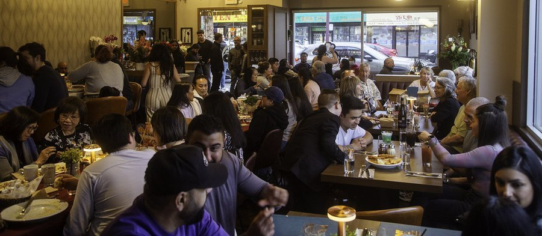

Eating Slowly and Digestion: Why Pace Matters
The speed you eat at changes how your gut handles the meal. Here's what eating slowly actually does for digestion, bloating and fullness, and how to build the habit without turning dinner into a chore.

Key takeaways
- Eating fast can mean swallowing more air and chewing less, both linked to bloating.
- Chewing thoroughly starts digestion in the mouth, breaking food into particles your gut handles more easily.
- Fullness signals take time to register — roughly 20 minutes is a common reference point.
- Slower eating is linked to lower calorie intake in some studies, likely from that same delayed fullness signal.
- Small, concrete changes (putting down the fork, drinking water between bites) work better than "just eat slower."
Eating slowly gives your digestive system a real mechanical advantage: more thorough chewing breaks food into smaller particles your stomach and intestines process more easily, and it gives fullness hormones time to register before you've eaten past comfortable. Eating quickly, by contrast, is linked to more swallowed air, less chewing and a higher chance of eating past fullness, all of which can show up as bloating, discomfort or simple overeating.
None of that means every fast-eater has a bad gut, or that slow eating fixes every digestive complaint. It's one modifiable habit with a reasonably clear mechanism behind it, and it's worth understanding before deciding whether it's worth changing.
What actually happens when you eat too fast?
Two things happen almost immediately. First, rushed eating usually means less chewing, so larger food particles arrive in the stomach than would if you'd chewed each bite 15 to 20 times. Your stomach and small intestine then have to do more of the mechanical breakdown work that your teeth and saliva could have handled. Second, fast eating tends to involve swallowing more air with each gulp, called aerophagia, which can add to a feeling of bloating or trapped gas later. Neither effect is dramatic on its own, but they compound meal after meal for people who consistently eat in a hurry.
Why does chewing matter so much for digestion?
Digestion doesn't start in the stomach; it starts in the mouth. Saliva contains an enzyme called salivary amylase that begins breaking down carbohydrates the moment you start chewing, and mechanical chewing itself increases the surface area of food particles, giving stomach acid and digestive enzymes more to work with later. Food that's swallowed in larger, less-chewed chunks essentially shows up to the next stage of digestion already behind schedule, and the gut has to compensate.
How does eating speed affect fullness and appetite?
Fullness isn't instant. Hormones like leptin and peptide-YY, which signal satiety to the brain, take time, often cited around 20 minutes, to rise meaningfully after a meal begins. Someone eating quickly can finish a full plate well before those signals have caught up, making it easier to eat past the point the body would otherwise have called "enough." Several studies comparing fast versus slow eating of the same meal have found that slower eating is associated with lower total calorie intake and a stronger sense of fullness afterward, which is the clearest practical reason this habit gets so much attention from dietitians.
| Eating pace | Common effect |
|---|---|
| Fast, under 10 minutes | More swallowed air, less chewing, easier to overeat |
| Moderate, 15-20 minutes | Fullness signals partly caught up, more balanced intake |
| Slower, 20+ minutes with pauses | Better chewing, fuller satiety signal, less bloating for many |
Can eating slowly help with bloating specifically?
For some people, yes, particularly bloating linked to swallowed air or under-chewed food rather than bloating from a specific food intolerance or a gut condition. If bloating is a near-daily issue regardless of how carefully you eat, pace alone probably isn't the main driver, and it's worth looking at other common causes. Our guide to why you might always feel bloated covers the fuller list, from fiber intake to specific food triggers.
Does eating pace affect acid reflux?
It can be a contributing factor for some people. Eating quickly often means eating larger bites and swallowing more air, and both have been associated with reflux symptoms in some research, alongside the more established triggers like large meal size, lying down soon after eating, and certain foods. Slowing down is a reasonable thing to try if reflux is an occasional nuisance, though it shouldn't replace medical evaluation for frequent or severe symptoms.
Is there a connection between eating speed and blood sugar?
Some studies have found that eating the same meal quickly produces a larger post-meal blood sugar spike than eating it slowly, possibly related to how quickly carbohydrates are broken down and absorbed when food arrives in bigger, less-chewed pieces. The research in this area is still developing, and more work is needed to pin down the exact mechanism. Still, it's a reasonable extra motivation to slow down for anyone already watching blood sugar responses after meals.
What are practical ways to actually slow down?
Intending to "eat slower" rarely works on its own; it needs a concrete trigger. Putting your fork or chopsticks down between bites breaks the automatic shoveling rhythm that fast eaters fall into without noticing. Sipping water throughout the meal creates natural pauses. Eating without a screen, phone or TV removes the distraction that makes it easy to finish a plate without registering how fast you went through it. Chewing each bite a set number of times, even an imperfect count like 15, works as a simple mental anchor until the habit becomes automatic.
- Set your utensil down between bites instead of holding it the whole meal.
- Take a sip of water every few bites to create natural pauses.
- Eat without a phone, laptop or TV competing for attention.
- Chew each bite roughly 15-20 times before swallowing.
- Serve smaller first portions, so finishing quickly doesn't mean overeating.
Does the type of food change how much pace matters?
Somewhat. Dense, fibrous foods like raw vegetables, tough meats or whole grains genuinely need more chewing to break down well, so rushing them has a bigger digestive cost than rushing a smooth soup or a soft-cooked food. Meals heavy in fiber benefit the most from a slower pace, since under-chewed fiber is more likely to contribute to gas and bloating. If fiber itself is a source of discomfort regardless of pace, our high-fiber foods list covers how to introduce it gradually.
Who might not need to worry much about eating speed?
People with no digestive complaints, stable weight and no reflux symptoms likely don't need to overhaul how they eat just because an article told them to. This is a habit worth adopting if bloating, discomfort, reflux or overeating are recurring issues, not a universal rule everyone must follow at every meal. Context, and comfort, matter more than a rigid pace.
When should digestive symptoms see a doctor instead of a pace fix?
If bloating, pain, reflux or changes in bowel habits are frequent, worsening, or accompanied by unintended weight loss, blood in stool, or persistent pain, those warrant a medical evaluation rather than a wait-and-see approach with eating habits. Pace changes are a reasonable, low-risk first step for everyday discomfort, not a substitute for ruling out something that needs treatment.
Eating slowly is one of the few digestion habits that's genuinely free, has a clear mechanism behind it, and doesn't require giving up any food. It won't resolve every gut complaint, but for bloating linked to rushed meals, under-chewing or swallowed air, it's a straightforward place to start before reaching for anything more complicated.
Frequently asked questions
Does eating fast cause bloating?
It can contribute to it. Eating quickly often means swallowing more air and chewing food less thoroughly, both of which can leave the stomach with more gas and larger food particles to break down, which some people experience as bloating.
How long should a meal take?
There's no strict rule, but many digestion and satiety studies use roughly 20 minutes as a reference point, since that's about how long it can take fullness signals to register. Chewing each bite 15 to 20 times is a simple practical guide rather than a strict count to hit.
Does chewing more help digestion?
Yes, generally. Thorough chewing breaks food into smaller particles and mixes it with saliva, which contains enzymes that start carbohydrate digestion before food even reaches the stomach. Smaller particles are easier for the stomach and intestines to process further.
Can eating slowly help with weight management?
Some research links slower eating to lower calorie intake and greater fullness at the end of a meal, likely because it gives satiety hormones more time to register before you've eaten past comfortable fullness. It's one modest tool among many, not a stand-alone weight-loss strategy.
Is eating slowly helpful for acid reflux?
It may help some people, since large, rushed meals and swallowed air can both aggravate reflux. It's a reasonable thing to try alongside other established reflux habits, but it isn't a replacement for medical treatment if reflux is frequent or severe.
What's a simple way to actually eat more slowly?
Put your fork down between bites, drink water throughout the meal, and avoid eating directly from a screen or while distracted. Each of these breaks the automatic, fast rhythm that distracted eating tends to fall into.
Does eating speed affect blood sugar?
Some studies suggest eating quickly is associated with larger post-meal blood sugar spikes compared with eating the same meal more slowly, though more research is needed to understand exactly why. It's a reasonable additional reason to slow down, especially for anyone managing blood sugar.
Related: Why am I always bloated? · High-fiber foods list · Prebiotics vs probiotics · Leaky gut: what the science says
Image: Rod Raglin / Openverse (Flickr) / CC BY-SA 2.0